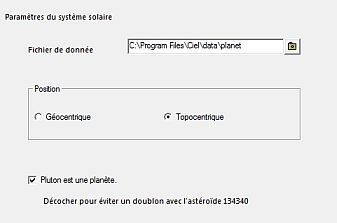
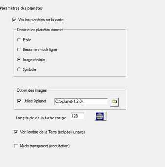
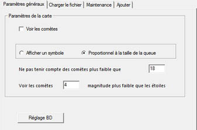
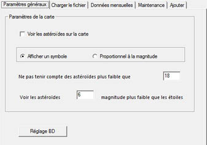

Le réglage du Système solaire a quatre onglets :
 Dans cet onglet, vous précisez le répertoire des textures des planètes.
Vous pouvez spécifier si votre position est géocentrique ou topocentrique et si Pluton doit être considéré ou non comme une planète.
 Vous pouvez activer ou désactiver l'affichage du Soleil, des planètes et de leurs satellites.
Quatre modes de représentation des objets du système solaire sont disponibles, ils sont surtout distincts à partir des champs de vision inférieurs à 45°.
Après l'avoir téléchargé, vous pouvez utiliser le logiciel xplanet pour un meilleur rendu.
Vous pouvez mettre à jour la longitude de la Grande Tâche Rouge de Jupiter : l'icône de droite ouvre la page Jupos dans votre navigateur, vous trouvez page de la longiture de la GTR dans le menu de gauche.
Cochez Voir l'ombre de la Terre pour une simulation des éclipses lunaires.
Mode transparent (occultation) Ce mode permet de voir les étoiles derrière les planètes (utile en cas d'occultation).
 Avant d'afficher les comètes, vous devez charger dans la base de donnée de CdC le dernier fichier du MPC contenant leurs éléments orbitaux. Vous pouvez aussi ajouter les élément orbitaux d'une nouvelle comète et effacer les entrées obsolètes de la base de données ou toutes les informations sur les comètes.
Quatre onglets dans cette fenêtre :
 Avant d'afficher les astéroïdes, vous devez charger dans la base de donnée de CdC les derniers fichiers du MPC contenant leurs éléments orbitaux. Vous pouvez aussi ajouter les élément orbitaux d'un nouvel astéroïde et effacer les entrées obsolètes de la base de données une par une ou avant un mois donné ou toutes les informations sur les astéroïdes.
Cinq onglets dans cette fenêtre :
{kind=link}
{kind=link}
{kind=link}
{kind=link}
{kind=link}
{kind=link}
{kind=link}
{kind=link}
{kind=link}
{kind=link}
{kind=link}